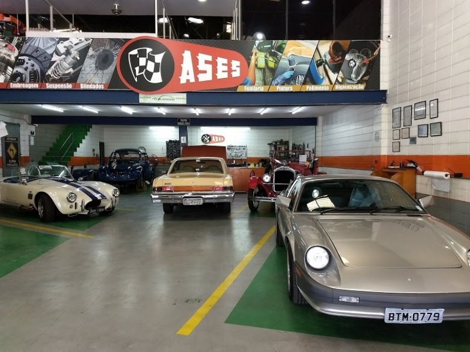

O que causa a necessidade de realizar a retífica de um motor?
O motor novo sai de fábrica com recomendações técnicas de seu fabricante especificando as manutenções necessárias para garantir que este tenha uma longa vida. Entre essas recomendações está a retífica por quilometragem rodada, determinada de acordo com cada fabricante e modelo, normalmente descrita no manual do veículo.
A retífica do motor também pode ter outras motivações que vão desde um desgaste por tempo de uso, desgaste excessivo, bem como por danos gerados pela falta ou manutenção inadequada, ou mesmo, pela falha de algum dispositivo ou componente, cuja função é lubrificar ou dispersar a alta temperatura.
Listamos abaixo algumas das situações mais corrriqueiras que levam à necessidade de realizar a retífica do motor:
1. RETÍFICA DE MOTOR POR DESGASTE: